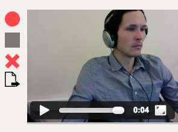

Shred - чат для разработчиков
Всё привет! Наша команда называется Shred и мы рады представить вам наш чат для разработчиков
Участвовали
Разработчики:
- Евстропов Андрей
- Емелин Дмитрий
- Кузнецов Пётр
- Малофеев Дмитрий
- Пасианиди Ефим
- Романенко Евгений
Меторы:
- Васильев Максим
- Ерошин Евгений
- Рождественский Роман
В проекте участвовало 6 разработчиков и 3 ментора. К сожалению, на презентации смогли присутствовать только
4, это: Емелин Дима, Пасианиди Ефим, Романенко Евгений и я, Евстропов Андрей. ((Тут можно когда я каждого объявляю
от каждого по паре слов, типа "меня зовут Женя и я отвечал за фронт и адаптивность приложения"))
На схеме приведён общий принцип работы приложения.
Когда пользователь заходит на наш сайт, его запрос направляется на сервер express, где проверяется
сессия пользователя, если сессии нет, то она устанавливается с помощью модуля express-session, если есть,
то сессия проверяется на привязку к пользователю с помощью Github passport.
Информация о текущих сессиях и пользователях хранится в базе данных.
Если пользователь не авторизирован, то он направляется на гитхаб для авторизации и возвращается обратно на наш сайт.
После успешной авторизации пользователя express отдает страницу чата.
Следующим шагом становится задача подключения чата к вебсокет серверу. В качестве сервера используется socket.io
Авторизация на котором осуществляется
так же как и в приложении в целом, через сессии и паспорт гитхаба. Что возможно благодаря использованию middle ware
связки socket.io-express.
Над клиентской socket.io библиотекой написана специльная надстройка для повышения уровня абстракции и проверки
данных, передаваемых в сообщениях. Например при создании сообщения необходимо проверить, что указан канал отправки
и текст сообщения.
Так же в нашем чате реализован видеозвонок, который возможен благодаря использованию технологии webrtc. Для этого
у нас создан отдельный сервер, который управляет webrtc подключениями между активными пользователями.
А теперь более подробно о реализации страницы чата
Видеозвонок
Авторизация на Peer сервере

Теперь более подбробно о том как же удается связать пользователей чата для видеозвонка.
При загрузке страницы чата пользователь автоматически отправляет запрос на peer сервер для авторизации на нем.
После авторизации пользователь отправляет свой id для сохранения на сокетный сервер.
Это создано с умыслом, что пользователь может создать видеозвонок только для определенных пользователей.
Например, как возможный вариант дальнейшего развития чата. Пользователь может забанить сообщения от другого пользователя,
соответственно и звонить он хочет всем в канале, кроме забаненых пользователей. Так же он не хочет получать звонки от этих пользователей
Видеозвонок
Создание видеоконференции

Когда пользователь хочет позвонить. Он запрашивает id доступных и разрешенных для звонка пользователей. После этого
отправляет звонок на Peer сервер. Который сообщает пользователям с данными id что к ним поступил звонок.
В результате чего устанавливается соединение между пользователями через api webrtc
Fork me on Github